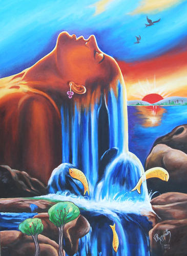
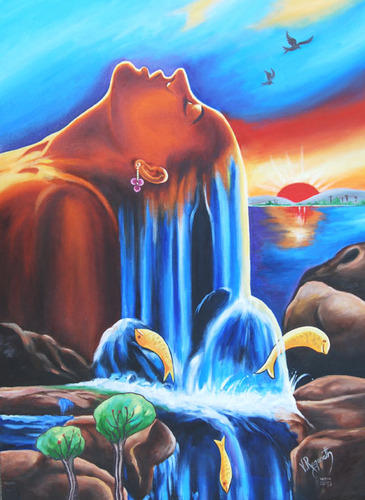

Art is a highly diverse range of human activities engaged in creating visual, auditory, or performed artifacts— artworks—that express the author’s imaginative or technical skill, and are intended to be appreciated for their beauty or emotional power. The oldest documented forms of art are visual arts, which include images or objects in fields like painting, sculpture, printmaking , photography, and other visual media . Architecture is often included as one of the visual arts; however, like the decorative arts, it involves the creation of objects where the practical considerations of use are essential, in a way that they usually are not in another visual art, like a painting.
Art may be characterized in terms of mimesis (its representation of reality), expression, communication of emotion, or other qualities. Though the definition of what constitutes art is disputed and has changed over time, general descriptions center on the idea of imaginative or technical skill stemming from human agency and creation. When it comes to visually identifying a work of art, there is no single set of values or aesthetic traits. A Baroque painting will not necessarily share much with a contemporary performance piece, but they are both considered art.
Back of a Renaissance oval basin or dish, in the Metropolitan Museum of Art The oldest documented forms of art are visual arts, which include creation of images or objects in fields including today painting, sculpture, printmaking, photography, and other visual media. Sculptures, cave paintings, rock paintings and petroglyphs from the Upper Paleolithic dating to roughly 40,000 years ago have been found, but the precise meaning of such art is often disputed because so little is known about the cultures that produced them. In 2014, a shell engraved by Homo erectus was determined to be between 430,000 and 540,000 years old. A set of eight 130,000 years old white-tailed eagle talons bear cut marks and abrasion that indicate manipulation by neanderthals, possibly for using it as jewelry. A series of tiny, drilled snail shells about 75,000 years old—were discovered in a South African cave. Containers that may have been used to hold paints have been found dating as far back as 100,000 years.
Cave painting of a horse from the Lascaux caves, circa 16,000 BP Many great traditions in art have a foundation in the art of one of the great ancient civilizations: Ancient Egypt, Mesopotamia, Persia, India, China, Ancient Greece, Rome, as well as Inca, Maya, and Olmec. Each of these centers of early civilization developed a unique and characteristic style in its art. Because of the size and duration of these civilizations, more of their art works have survived and more of their influence has been transmitted to other cultures and later times. Some also have provided the first records of how artists worked. For example, this period of Greek art saw a veneration of the human physical form and the development of equivalent skills to show musculature, poise, beauty, and anatomically correct proportions.
In Byzantine and Medieval art of the Western Middle Ages, much art focused on the expression of subjects about Biblical and religious culture, and used styles that showed the higher glory of a heavenly world, such as the use of gold in the background of paintings, or glass in mosaics or windows, which also presented figures in idealized, patterned (flat) forms. Nevertheless, a classical realist tradition persisted in small Byzantine works, and realism steadily grew in the art of Catholic Europe.
This is about general history of art.
This is about general history of art.
This is about general history of art.
THIS ALL ABOUT ... THE ART
#include < iostream >
int main() {
std::cout << "Hello World!";
return 0;
}